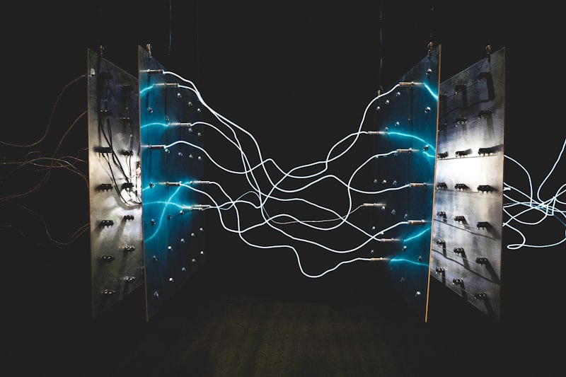
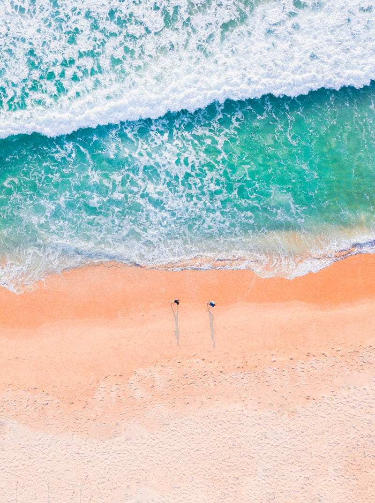

Grèce
12 juin 2025 → 4 juillet 2025
Îles ioniennes et Cyclades.
Étapes
Articles

Malte — La Valette, quelle merveille
28/06/2025

Navigation de nuit — Détroit de Messine
23/06/2025
Navigation de nuit — Sardaigne → Sicile
22/06/2025

Maddalena — départ vers la Sicile
13/06/2025

Coucher de soleil à La Maddalena
12/06/2025

Mouillage Cala Corsara — jour 2
12/06/2025